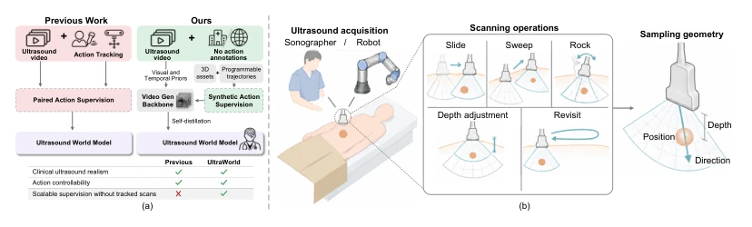
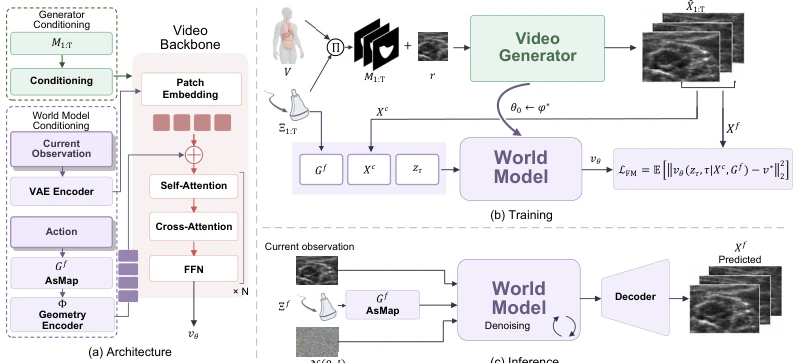
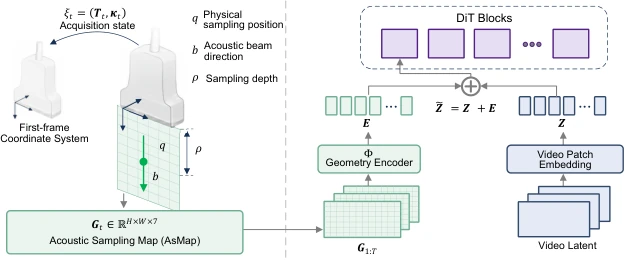
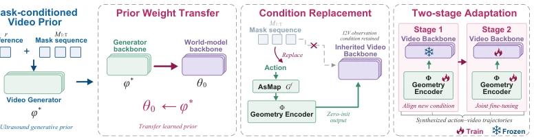
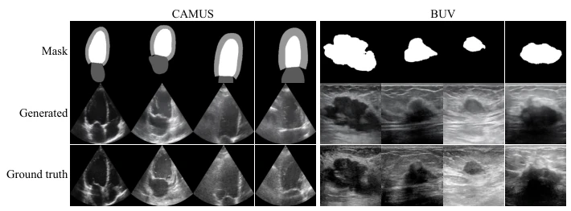
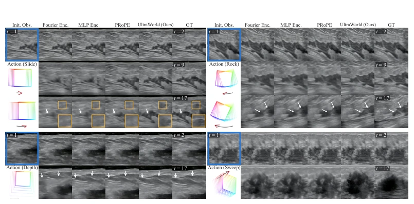
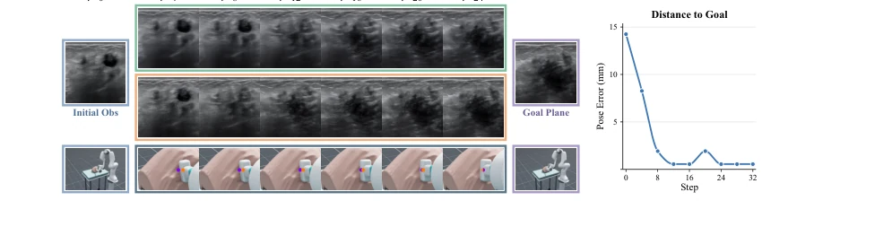
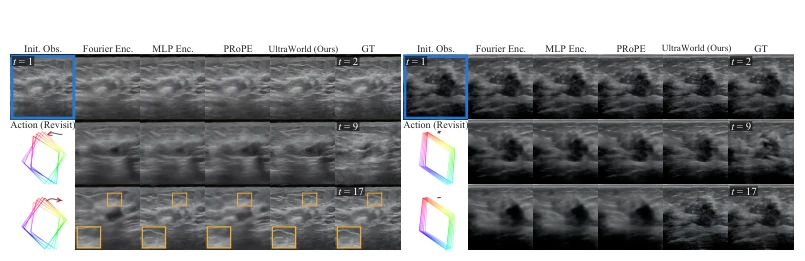
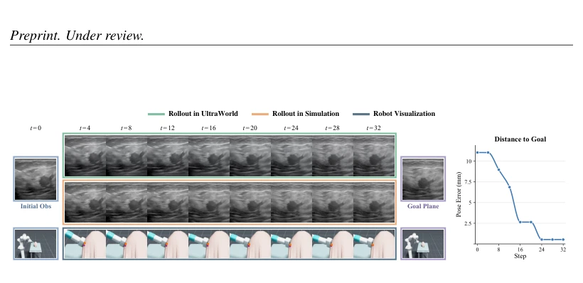
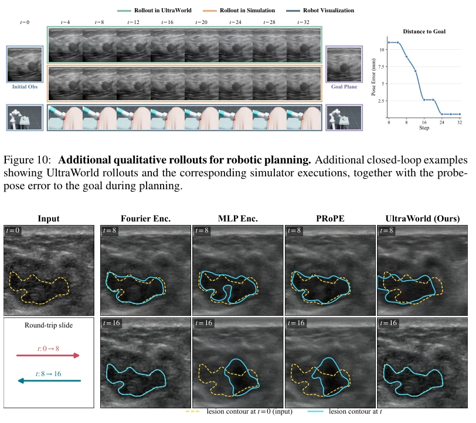

This paper attempts to address the most challenging data problem in ultrasound world models: unlabeled probe trajectories. The authors devised a 'self-distillation' approach, combining clinical video appearance priors with 3D anatomical motion supervision to successfully construct action-video pairs. The AsMap design is quite interesting, converting probe pose and imaging parameters into pixel-level acoustic sampling positions, which is much more reliable than simply providing 6-DoF poses, after all, ultrasound imaging views beam cross-sections. However, this method relies on 3D anatomical assets to generate supervision signals; if registered images are lacking, this pipeline is difficult to initiate, limiting its generalization in pure video scenarios. Experiments were mainly run in simulation; closed-loop planning is indeed stronger than visual servoing, but real-world validation remains unproven. Overall, it is a clever data engineering effort, but generalization to the physical world depends on future work.
研究动机Motivation
构建自主超声扫描的世界模型，核心难点在于学习动作 - 观测关系。现有方法如Cardiac Copilot (Jiang et al., 2024a) 和 EchoWorld (Yue et al., 2025) 都依赖同步的超声 - 姿态数据，这在临床中极难大规模获取，且常规视频缺乏探头运动记录。采集同步视频 - 姿态数据需专家操作、校准追踪及参与者招募，劳动密集型。仿真虽可控，但物理射线追踪可能忽略组织散射 (Duelmer et al., 2025)，或需配对的CT-超声数据 (Ao et al., 2026)。因此，如何从无追踪的临床视频中可靠地学习动作响应，是提升数据规模和临床多样性的关键。本文旨在绕过昂贵的动作标注，利用视频先验和合成监督实现可扩展的学习。
Constructing world models for autonomous ultrasound scanning, the core difficulty lies in learning action-observation relationships. Existing methods such as Cardiac Copilot (Jiang et al., 2024a) and EchoWorld (Yue et al., 2025) all rely on synchronized ultrasound-pose data, which is extremely difficult to acquire on a large scale clinically, and conventional videos lack probe motion records. Collecting synchronized video-pose data requires expert operation, calibration tracking, and participant recruitment, making it labor-intensive. Although simulation is controllable, physical ray tracing may ignore tissue scattering (Duelmer et al., 2025), or may require paired CT-ultrasound data (Ao et al., 2026). Therefore, how to reliably learn action responses from untracked clinical videos is key to increasing data scale and clinical diversity. This paper aims to bypass expensive action annotation, utilizing video priors and synthetic supervision to achieve scalable learning.

Figure 1: Learning ultrasound world models from untracked clinical videos. (a) Clinical videos provide appearance priors, while 3D anatomy provides motion supervision. Together, they yield synthetic action–video pairs for self-distillation. (b) Complex scanning operations change which anatomical cross-sections are imaged and how they are sampled. AsMap encodes the resulting sampling positions, beam directions, and depths to support reliable action control.
The overall process is divided into three steps. First, train a mask-conditioned video generator using unlabeled clinical videos to learn ultrasound appearance and temporal priors. Second, generate synthetic action-video pairs based on 3D anatomical assets and programmable trajectories as self-distillation supervision signals. Finally, convert the generator into a world model through self-distillation, replacing the mask condition with AsMap conditions. The core innovation is the Acoustic Sampling Map (AsMap), which encodes probe pose and imaging configuration into pixel-level 3D sampling positions, beam direction, and depth, solving the problem where simple 6-DoF poses cannot distinguish imaging parameter changes. AsMap's seven-channel design explicitly encodes physical sampling geometry, solving the defect of traditional pose encoding ignoring imaging parameter changes. AsMap aligns video Tokens via a geometric encoder, injecting conditions before the Transformer. Self-distillation adopts two-stage fine-tuning, first freezing the backbone to train the encoder, then joint fine-tuning, ensuring smooth transition from generation priors to prediction models.

Figure 2: Overall framework of UltraWorld. (a) A shared video backbone supports mask- conditioned generation and action-conditioned world modeling through AsMap. (b) 3D anatomy and programmable trajectories provide synthetic action–video supervision, transferring the learned video prior to the world model through self-distillation and flow matching. (c) At inference, the world model predicts future ultrasound video from the current observation and prescribed acquisi- tion trajectory.

Figure 3: Acoustic Sampling Map and geometry conditioning. (a) Probe pose and imaging parameters determine each pixel’s physical sampling position q, beam direction b, and sampling depth ρ. Positions and directions are expressed in the first-frame probe coordinate system, forming a seven-channel AsMap. (b) A geometry encoder Φ aligns the AsMap sequence with the video tokens, providing pixel-aligned conditioning before the first transformer block.

Figure 4: Self-distillation for ultrasound world modeling. The transformation consists of three steps: (1) Prior weight transfer: initialize the world model from the learned video generator; (2) Condition replacement: replace anatomical-mask conditioning with AsMap conditioning while retaining the observation input; (3) Two-stage adaptation: train the geometry encoder with a frozen video backbone, then jointly fine-tune both. Both stages use synthesized action–video trajectories.
实验Experiments
使用BUV和CAMUS学习先验，I-SPY1构建解剖轨迹。基线包括Fourier Encoding (Fan et al., 2026)、MLP Encoding (Yue et al., 2025) 和 PRoPE (Li et al., 2025)。指标涵盖PSNR、LPIPS、运动误差及规划中的平移/旋转误差。AsMap在预测保真度和动作跟随上均优于基线。在9个闭环局部规划实验中，规划采用模型预测控制 (MPC) 结合交叉熵方法 (CEM)，相比视觉伺服，UltraWorld将最终距离误差降低29%，方向误差降低38%。消融实验表明AsMap优于匹配参数的MLP。此外，在未见临床帧上的泛化测试也显示AsMap误差最低。
Used BUV and CAMUS to learn priors, I-SPY1 to construct anatomical trajectories. Baselines include Fourier Encoding (Fan et al., 2026), MLP Encoding (Yue et al., 2025), and PRoPE (Li et al., 2025). Metrics cover PSNR, LPIPS, motion error, and translation/rotation error in planning. AsMap outperforms baselines in both prediction fidelity and action following. In 9 closed-loop local planning experiments, planning uses Model Predictive Control (MPC) combined with Cross-Entropy Method (CEM); compared to visual servoing, UltraWorld reduces final distance error by 29% and direction error by 38%. Ablation experiments indicate AsMap is superior to matched-parameter MLP. Additionally, generalization tests on unseen clinical frames also show AsMap has the lowest error.

Figure 5: Mask-conditioned ultrasound video generation. Generated sequences follow the pre- scribed anatomy while preserving realistic ultrasound appearance.

Figure 6: Qualitative comparison across scanning operations. UltraWorld follows prescribed operations more consistently. White arrows highlight differences in action following; yellow insets highlight missing or unstable hypoechoic regions and anatomical features in baseline predictions.

Figure 8: Closed-loop robotic ultrasound planning with UltraWorld. A representative episode showing imagined rollouts, executed observations, and the target view. Only the first optimized action is executed before replanning from the new observation.

Figure 9: Qualitative comparison under revisiting. UltraWorld and alternative conditioning meth- ods predict future ultrasound frames from the same initial observation and prescribed trajectory. Comparisons with reference futures highlight differences in action following and the continuity of local tissue appearance.
其他图片Other Figures

Figure 10: Additional qualitative rollouts for robotic planning. Additional closed-loop examples showing UltraWorld rollouts and the corresponding simulator executions, together with the probe- pose error to the goal during planning.

Figure 11: Action-conditioned rollouts from real clinical ultrasound observations. Each method is initialized from the same real ultrasound image and follows a prescribed acquisition tra- jectory. The intermediate predictions visualize how the predicted anatomy evolves in response to the prescribed action.